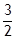

Question 17
Fish in
aquariums are sensitive to changes in water quality. An increase in ammonia
levels, even at low concentrations, can be toxic and cause death. In nature a
balance is maintained by bacteria which remove excess ammonia. The first step
of this process is to convert ammonia to nitrites according to the following
reaction:
NH3(g) + O2(g) ® NO2(g) +  H2O(g)
During this
process a temperature change occurs. Use the following equations to determine
the heat of this reaction.
Equation
one: N2(g) + O2(g) + 33.9 kJ ® NO2(g)
Equation
two: N2(g) + H2(g) ® NH3(g) + 46.2 kJ
Equation
three: H2(g) + O2(g) ® H2O(g) ∆H = -241.9 kJ/mol
|
What is the heat of reaction for this process? |